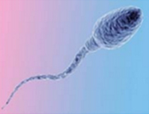

第三代试管婴儿自1990年诞生以来，从最初的只能筛查5-7对染色体发展成至今不仅可以对胚胎所有染色体（共23对）进行筛查 ，还可以深入到单基因进行了解。第三代试管婴儿归根结底是不仅仅选择外表看似正常的胚胎，更要在体外对胚胎进行染色体检查，选择染色体正常的胚胎植入子宫，理论上可以提高“试管婴儿”的成功率，这就是胚胎植入前遗传学筛查。
当前位置：主页 > 试管婴儿
Ⅰ第三代试管婴儿简介
1. 发展历史：
最初的第三代试管婴儿一般采用荧光原位杂交技术（FISH）的方法，能够同时检测不超过8对染色体，但是人类染色体有23对，其中5~7对染色体正常，仍然有可能存在其他染色体的异常，而没有被发现，所以才有了之后技术的发展。但泰国目前的第三代试管婴儿仍然只检测3对染色体。
2. 第三代试管婴儿作用：
35岁卵子畸变率已经超过45%，之后逐年升高。其实，身为女性自身也能有所感受：不采取避孕措施，夫妇双方各项生理检查均正常，为什么试孕1年都怀不上，问题可能就出在卵子上。
如果盲目移植不健康的胚胎会有怎样不好的结局？一、移植后不着床；二、孕期流产；三、具有出生缺陷或者遗传疾病。但是由于可以筛选性别所以国内目前严格限制技术应用。
而第三代试管婴儿由于在移植前即进行检查，则可淘汰不健康的胚胎，在很大程度上规避了流产的风险，同时可以明确知道胎儿性别。


3.第三代试管婴儿技术：
第三代试管婴儿的革命性技术——移植前基因筛查，包括PGD、PGS、NGS等多种。在胚胎移植前即进行检查，则可淘汰不健康的胚胎，在很大程度上规避了流产的风险。
4.PGS、PGD、NGS对比：
PGS是进阶版的染色体检查，针对第5或第6天的囊胚进行全部23对染色体的检查。PGS (Preimplantation Genetic Screening):胚胎植入前遗传学筛查，通过检测胚胎的23对染色体结构、数目，通过对比来分析胚胎是否有遗传物质异常; 这大大增加了检测出异常染色体的概率从而提高成功妊娠率。
PGD (Preimplantation Genetic Diagnosis):即胚胎植入前基因诊断，是第三代“试管婴儿“的核心技术，主要用于检查胚胎是否携带有遗传缺陷的基因; 尤其适合红绿色盲、白化病等患者进行优生优育。
NGS(Next Generation Sequencing)新一代基因测序技术，以在短时间内对基因进行精确定位，可检测胚胎全基因组的染色体疾病和94种单基因疾病(常染色体隐性遗传病、常染色体显性遗传病X连锁疾病、遗传性肿瘤等)，并可同时检测非整倍体、拷贝数异常和单亲二倍体引起的疾病。
5.各国第三代试管技术对比：
中国目前可以做第三代试管婴儿的医院一共有16家，患者可以自行选择就近约诊，但是有以下两个问题需要注意：
a) 中国目前有几千万不孕不育夫妻，医院资源供不应求，存在难挂号、难买药、难进周的情况；
b) 中国只能不孕不育夫妇双方明确有染色体疾病或携带者才能进行第三代试管婴儿，其他诸如大龄夫妇均不可享受。
美国及泰国目前开展的第三代试管婴儿，进行第三天胚胎的FISH检查，会筛查13,18,21和XY染色体是否存在异常，其他除非是有遗传疾病才会去筛查23对染色体。
欧洲目前普遍采用囊胚移植技术，将胚胎培养至第5天，取出1-3个细胞后冷冻，并将取出的细胞送至专门的PGS/PGD实验室检查，由此可以排除染色体或者单基因异常造成的上百种疾病。在操作第三代试管婴儿的过程中，胚胎学家即可了解到胎儿性别，让准父母有选择性地移植。
6.第三代试管婴儿适用人群：
a) 多次流产史
b) 曾生育有染色体问题的孩子或者流产的胚胎进行检查发现有染色体问题
c) 女性卵巢功能差，或超过35岁
d) 男性精子质量差，例如精子碎片率高
e) 准父母任一方已检出有染色体问题
- 

Ⅱ服务内容
上范第三代试管婴儿服务项目包括：HIV精子洗涤、HIV捐卵代孕、代孕、捐精代孕、捐精捐卵代孕、捐精自怀、捐卵代孕、捐卵自怀、卵子冷冻、试管婴儿手术。
Ⅲ上范第三代试管婴儿服务优势
1.赴欧合法化
持有中国不孕不育医疗咨询营业执照
欧洲医疗机构正式授权，在国内即可完成前期咨询
欧洲律师审定合同并由驻华大使馆公证，确保合法有效
监管账户并定期发送账单，消费清晰透明
2.上范费用透明化
合作医院的海外市场部，专属服务人员
医疗资源优化整合，一站式全流程服务
以公司形式与上范机构合作，争取更多折扣
风险控制及规避，避免非必要花销，节省费用
3.全球试管最成功率最高
试管婴儿单周期成功率可达80%
合作医院各有千秋，擅长不同领域
针对患者生育水平提供个性化诊疗方案
治疗取消率低，反应的患者范围广泛
4.让您享受国际化服务
医疗顾问，提供试管婴儿及辅助生育专业咨询
私人管家，协助开设信托账户，监管并核算账单
专人协调，全程协助辅助生育
5.欧洲顶级医院供您选择
NCRC、ICRC、RHCA等多家试管婴儿医院
超过8家欧洲细胞捐赠合作机构
超过8家欧洲辅助生育合作机构
超过6家支持机构，包括美国律师事务所、信托基金等